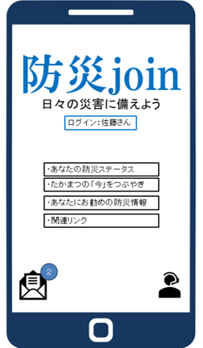
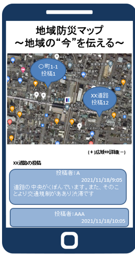
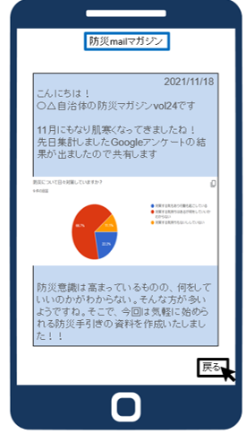
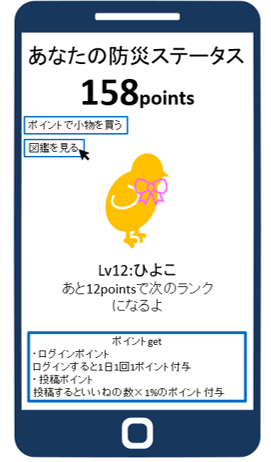

（１）卒業制作発表：高松市の防災について
制作期間：2021.10-2022.1
制作メンバー：西川・貞方・佐合
作業内容
（２）概要：災害joinのホーム画像と、3つのコンテンツ

| コンテンツの説明 | スマートフォンの表示画像 |
| 【シンプルなホームデザイン】
・幅広い年代層の使用を想定して難しい機能を排除 ・わからないことがあればチャットで相談可能に |
 |
| 【つぶやき機能】
自ら発信を促す、"今をつぶやく"機能を搭載。 ・いいね！の共感ボタンを設置→発信するハードルを下げる ・いたずら目的の投稿を防止→防災join登録の実名と紐づくこと、通報・チェック機能を設置 ・獲得したいいね数はゲーム内ポイントに交換可能 |
 |
| 【防災マガジン】
・週に１度メルマガを送信→登録情報に基づいた性別や年齢、家族構成等/興味等に応じた情報を送信。 ・メルマガ内アンケートの実施→住民に現状を届けるとともに、行政にとっても住民の声を届けやすくする |
 |
| 【つぶやき機能】
自ら発信を促す、"今をつぶやく"機能→防災joinの目的でもある |
 |
（３）詳細はPPT発表資料にて